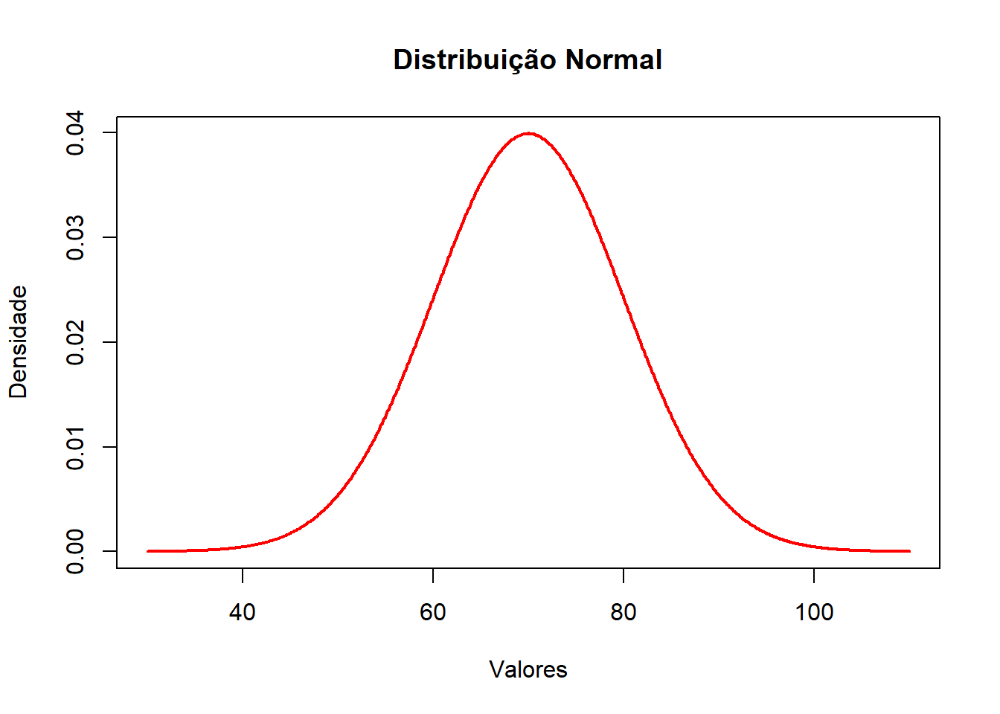
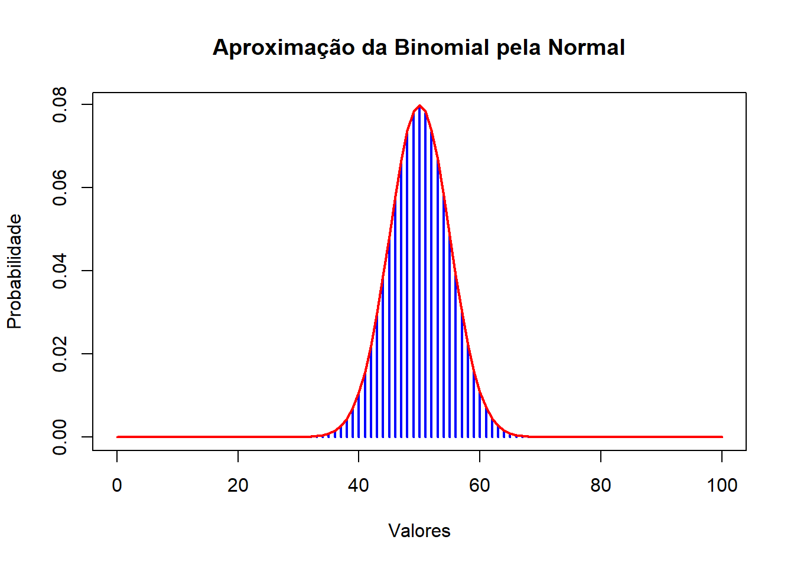
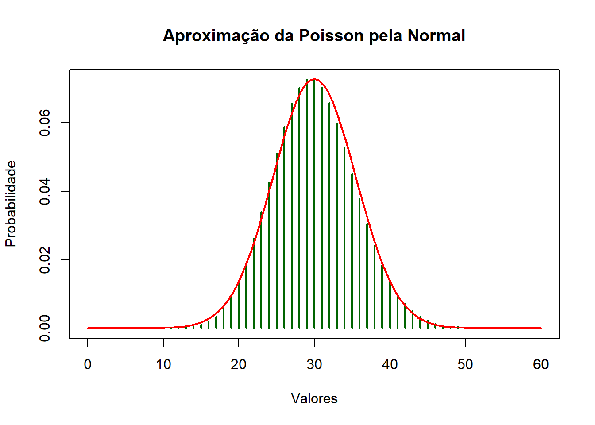

As distribuições de probabilidade são modelos matemáticos utilizados para representar fenômenos aleatórios e descrever o comportamento de variáveis aleatórias discretas e contínuas. Entre as distribuições mais importantes da Estatística destacam-se a Binomial, a Poisson e a Normal, amplamente utilizadas em problemas de engenharia, controle de qualidade, análise de falhas e estudos experimentais.
Neste relatório serão estudadas as aproximações da distribuição Binomial e da distribuição de Poisson pela distribuição Normal, apresentando os fundamentos teóricos, demonstrações matemáticas, aplicações práticas e implementações computacionais utilizando a linguagem R.
Objetivo geral
Estudar a aproximação das distribuições Binomial e Poisson pela distribuição Normal por meio de fundamentos teóricos, demonstrações matemáticas e aplicações computacionais no R.
Objetivos específicos
Compreender as características das distribuições Binomial, Poisson e Normal;
Identificar diferenças entre distribuições discretas e contínuas;
Comparar resultados exatos e aproximados;
Interpretar aplicações práticas das distribuições probabilísticas.
2 📚 Fundamentação Teórica
2.1 Diferença entre Distribuições Discretas e Contínuas
As distribuições de probabilidade podem ser classificadas em discretas ou contínuas de acordo com o tipo de variável aleatória representada.
2.2 Distribuições Discretas
As distribuições discretas trabalham com valores contáveis e separados.
Ex.: número de defeitos; quantidade de chamadas; número de sucessos.
A variável assume valores específicos :
\[
0,1,2,3,...
\]
A probabilidade é calculada em pontos específicos:
\[
P(X=x)
\]
Em que :
X –> variável aleatória , podendo ser discreta ou contínua ;
x –> um valor específico de X .
Exemplos: Binomial; Poisson.
Características:
Assumem valores separados ; geralmente representam contagens - como : número de alunos de uma sala , quantidade de defeitos de uma peça , entre outros.
2.3 Distribuições Contínuas
As distribuições contínuas trabalham com valores em intervalos contínuos. Exemplos: altura; temperatura; tempo; massa.
A variável pode assumir infinitos valores.
Probabilidades calculadas em intervalos ( Distribuições contínuas):
\[
P(a<X<b)
\] Ex.: \[
[1 , 2]
\] Aqui , X pertence a qualquer valor entre 1 e 2 , como 1,2 ; 1,9 , etc.
Ex.: Distribuição Normal;
Características:
Representam medidas contínuas - como : massa e tempo ; infinitos valores possíveis;probabilidades em intervalos.
3 Distribuições
3.1 Binomial
A distribuição Binomial é uma distribuição discreta utilizada para modelar situações em que existe:
número fixo de tentativas;
dois possíveis resultados:
sucesso;
fracasso;
independência entre os eventos;
probabilidade constante(significa que a chance de sucesso não muda ao longo as tentativas).
Ela é muito utilizada em problemas envolvendo contagem de sucessos.
Características
distribuição discreta;
trabalha com contagens;
possui número fixo de testes;
utiliza probabilidade constante;
cada tentativa é independente.
Utilizada quando:
existe número fixo de testes;
deseja-se contar sucessos;
a probabilidade permanece constante.
Fórmula:
\[
P(X=x)=C(n,x)p^x(1-p)^{n-x}
\]
Em que :
P(X=x) → probabilidade de ocorrer x sucessos;
p → probabilidade de sucesso ;
1 - p → a probabilidade de fracasso;
C(n,x) → coeficiente binomial,quantidade de formas possíveis de obter x sucessos em n tentativas.
Exemplo de Aplicação
aprovação ou reprovação;
peças defeituosas;
acertos em provas;
lançamento de moedas.
3.2 de Poisson
A distribuição de Poisson é uma distribuição discreta utilizada para modelar ocorrências em intervalos de tempo, espaço ou volume.
Ela é utilizada quando se deseja analisar quantas vezes determinado evento ocorre.
Características
distribuição discreta;
trabalha com frequência de eventos;
utilizada em intervalos;
não exige número fixo de tentativas;
modela ocorrências aleatórias.
Utilizada quando:
deseja-se contar ocorrências;
os eventos acontecem aleatoriamente;
3.3 existe taxa média de eventos.
Fórmula:
\[
P(X=x)=\frac{e^{-\lambda}\lambda^x}{x!}
\] λ → média de ocorrências; x → número de ocorrências observadas; x!→ (fatorial do número de ocorrências).
Exemplo de Aplicação
chamadas telefônicas;
acidentes;
falhas em máquinas;
defeeitos em peças;
clientes chegando em filas.
3.4 Distribuição Normal
Distribuição contínua utilizada para representar fenômenos naturais e experimentais.
Ela possui formato simétrico em forma de sino.
Características da Distribuição Normal
distribuição contínua;
curva simétrica;
formato de sino;
média, mediana e moda coincidem;
probabilidades calculadas em intervalos.
Utiliza-se a distribuição Normal quando:
os dados são contínuos;
deseja-se analisar comportamento natural dos dados;
os valores se concentram em torno da média.
Fórmula:
\[
f(x)=\frac{1}{\sigma\sqrt{2\pi}}
e^{-\frac{(x-\mu)^2}{2\sigma^2}}
\] x → qualquer valor possível da variável contínua; pode ser altura, peso, temperatura, nota etc.
4 Medidas Principais em cada distribuição
4.1 Média
Fórmula Geral da Média aritmética :
\[
{\mu}=\frac{x_1+x_2+x_3+\cdots+x_n}{n}
\]
Em que x → valores observados n → quantidade total de x.
Usada quando todos os valores possuem o mesmo “peso”.
Logo,não é usada se tratando de distribuições,pois nessa última, cada valor de x , tem - se uma probabilidade diferente.
Média em distribuições:
\[
\mu=\sum x\cdot P(x)
\]
x → valor possível da variável aleatória. Pode ser : um resultado possível, uma ocorrência possível, ou um valor que o fenômeno pode assumir.
P(x) → probabilidade de x acontecer. Traduz no valor central esperado de uma distribuição. indica o ponto em torno do qual os valores observados tendem a se concentrar.Ela resume o comportamento geral dos dados.
Na Binomial
\[
\mu=np
\]
Exprime o número médio esperado de sucessos p em: n tentativas.
Em Poisson
\[
\mu=\lambda
\]
Simboliza o número médio de ocorrências em determinado intervalo de tempo, espaço ou volume.
Distribuição Normal
A Normal é contínua, então a média é obtida por integral Porque: existem infinitos valores possíveis; não dá para somar ponto por ponto , dado que se trata de uma distribuição contínua.
\[
\mu=\int_{-\infty}^{\infty}x f(x)\,dx
\]
Representa o centro da curva Normal.
Nessa distribuição: média, mediana e moda coincidem no mesmo ponto.
4.2 Variância
Fórmula geral
\[
\sigma^2=\sum (x-\mu)^2P(x)
\]
Mede o grau de dispersão dos dados em relação à média. Ela mostra o quanto os valores estão espalhados.
A variância eleva as distâncias ao quadrado porque ela precisa medir o “espalhamento total” dos dados sem que valores positivos e negativos se cancelem.
A ideia central é essa:
distância até a média → mede afastamento;
quadrado → transforma todos os afastamentos em positivos e aumenta o peso dos mais distantes;
divisão → transforma a soma total em uma média do espalhamento.
Quanto maior a variância: - maior a dispersão; - maior a variabilidade dos dados.
Na Binomial
\[
\sigma^2 = np(1-p)
\]
Mede o quanto os sucessos variam em torno da média.
A variabilidade depende: - do número de tentativas; - da probabilidade de sucesso; - da probabilidade de fracasso.
Em Poisson
\[
\sigma^2 = \lambda
\]
(A variância é igual à média)
Isso significa que a dispersão acompanha diretamente a taxa média de ocorrências.
Fórmula geral do desvio padrão para dados observados (estatística descritiva), ou seja, quando você possui valores absolutos de uma amostra ou população , como notas de alunos , alturas , peso. Não se pode usar ela para se calcular distribuições.
Fórmula geral para valores aleatórios:
\[
\sigma = \sqrt{E[(X-\mu)^2]}
\]Onde:
\(\sigma\) = desvio padrão da população;
\(\mu\) = média da variável aleatória;
\(E\) = valor esperado (esperança matemática);
\(X\) = variável aleatória.
Fórmula geral se tratando de distribuições:
\[
\sigma=\sqrt{\sigma^2}
\]
Mede a distância média dos valores em relação à média.Ele é a raiz quadrada da variância.Enquanto essa última está ao quadrado, o desvio padrão retorna para a unidade original dos dados.
Na Binomial
\[
\sigma=\sqrt{np(1-p)}
\] Exprime a dispersão dos sucessos.
Em Poisson
\[
\sigma=\sqrt{\lambda}
\] Indica a dispersão das ocorrências.
5.0.1 Normal
\[
\sigma
\]
Controla a largura da curva Normal.
menor desvio padrão → curva estreita;
maior desvio padrão → curva espalhada.
6 Exemplo de cada distribuição de probabilidade e seus gráficos:
# Valores contínuosx <-seq(30, 110, by =0.1)# Densidade Normaly <-dnorm(x, mean =70, sd =10)# Gráficoplot(x, y,type ="l",lwd =2,col ="red",main ="Distribuição Normal",xlab ="Valores",ylab ="Densidade")

Interpretação
O gráfico possui formato de sino.
A maior concentração de valores ocorre próxima da média:
\[
\mu=70
\]
Valores mais distantes possuem menor probabilidade.
Como a distribuição é contínua: - a curva é suave; - não existem separações entre os valores.
Aproximação da Binomial pela Normal
Quando:
\[
n \text{ é grande}
\]
a distribuição Binomial começa a assumir formato semelhante ao da distribuição Normal.
Exemplo
\[
n=100
\]
\[
p=0,5
\]
Média
\[
\mu=np=100(0,5)=50
\]
Desvio padrão
\[
\sigma=\sqrt{100(0,5)(0,5)}=5
\]
Código em R
Código
# Valoresx <-0:100# Binomialy <-dbinom(x, size =100, prob =0.5)# Gráficoplot(x, y,type ="h",lwd =2,col ="blue",main ="Aproximação da Binomial pela Normal",xlab ="Valores",ylab ="Probabilidade")# Curva Normal aproximadacurve(dnorm(x, mean =50, sd =5),add =TRUE,col ="red",lwd =2)

Interpretação
As barras da distribuição Binomial começam a formar um comportamento semelhante à curva Normal.
Isso ocorre porque: - muitos resultados passam a se concentrar ao redor da média; - a distribuição torna-se mais simétrica.
A linha vermelha representa a aproximação Normal.
Aproximação da Poisson pela Normal
Quando:
\[
\lambda \text{ é grande}
\]
a distribuição de Poisson aproxima-se da Normal.
Exemplo
\[
\lambda=30
\]
Média
\[
\mu=30
\]
Desvio padrão
\[
\sigma=\sqrt{30}\approx5,48
\]
Código em R
Código
# Valoresx <-0:60# Poissony <-dpois(x, lambda =30)# Gráficoplot(x, y,type ="h",lwd =2,col ="darkgreen",main ="Aproximação da Poisson pela Normal",xlab ="Valores",ylab ="Probabilidade")# Curva Normal aproximadacurve(dnorm(x, mean =30, sd =sqrt(30)),add =TRUE,col ="red",lwd =2)

Interpretação
À medida que:
\[
\lambda
\]
aumenta: - a distribuição de Poisson torna-se mais simétrica; - as barras aproximam-se do formato contínuo da curva Normal.
A curva vermelha representa a aproximação Normal da distribuição discreta.
8 ⚙️ Metodologia
O desenvolvimento deste relatório foi realizado por meio de pesquisa teórica e aplicação computacional utilizando a linguagem R no ambiente RStudio. Inicialmente, foram estudados os conceitos de variáveis aleatórias discretas e contínuas, bem como as características das distribuições Binomial, Poisson e Normal.
Posteriormente, foram analisadas as condições em que as distribuições Binomial e Poisson podem ser aproximadas pela distribuição Normal. Para isso, realizaram-se demonstrações matemáticas, cálculos analíticos de probabilidades e implementações computacionais utilizando funções estatísticas do R.
Além dos cálculos numéricos, foram construídos gráficos para representar visualmente o comportamento das distribuições e facilitar a comparação entre distribuições discretas e contínuas. Os resultados obtidos teoricamente foram comparados aos resultados computacionais gerados no R, permitindo validar as aproximações estudadas.
Os resultados obtidos permitiram compreender as principais diferenças entre as distribuições Binomial, Poisson e Normal, bem como suas aplicações em problemas probabilísticos e estatísticos.
A distribuição Binomial apresentou comportamento discreto, sendo adequada para situações com número fixo de tentativas e dois possíveis resultados: sucesso ou fracasso. Os cálculos mostraram que a média depende diretamente do número de tentativas e da probabilidade de sucesso, enquanto a variância e o desvio padrão indicaram a dispersão dos sucessos em torno da média.
A distribuição de Poisson também apresentou comportamento discreto, porém voltado para a contagem de ocorrências em intervalos de tempo ou espaço. Observou-se que, nessa distribuição, a média e a variância possuem o mesmo valor, característica importante para sua identificação e interpretação.
Já a distribuição Normal apresentou comportamento contínuo e simétrico, representado pela curva em formato de sino. Os cálculos do valor Z permitiram padronizar os dados e interpretar quantos desvios padrões determinados valores estavam distantes da média.
Os resultados obtidos no R mostraram concordância com os cálculos analíticos realizados manualmente, demonstrando a eficiência da linguagem R na execução de cálculos probabilísticos e estatísticos.
Além disso, observou-se que, conforme os parâmetros das distribuições discretas aumentam, especialmente o valor de:
\[
n
\]
na Binomial e:
\[
\lambda
\]
na Poisson, seus gráficos tornam-se mais semelhantes ao formato da distribuição Normal. Isso evidencia a importância da aproximação Normal em problemas envolvendo grandes quantidades de dados.
Os gráficos produzidos auxiliaram na visualização das diferenças entre distribuições discretas e contínuas, permitindo compreender como as probabilidades se comportam em cada modelo estatístico.]
9 Conclusão
Conclui-se que as distribuições Binomial, Poisson e Normal possuem aplicações distintas na modelagem de fenômenos aleatórios, sendo classificadas conforme o tipo de variável aleatória envolvida. As distribuições Binomial e Poisson são discretas e utilizadas principalmente em problemas de contagem, enquanto a distribuição Normal é contínua e amplamente aplicada em fenômenos naturais e experimentais.
A análise realizada mostrou que a distribuição Normal pode aproximar satisfatoriamente as distribuições Binomial e Poisson quando determinadas condições são atendidas, simplificando cálculos probabilísticos complexos. Os resultados analíticos e computacionais obtidos no R apresentaram concordância, demonstrando a eficiência das ferramentas estatísticas da linguagem R no estudo das distribuições de probabilidade.
Código fonte
---# Só mude aqui!!!!author: "Sarah O. Ramalho"title: "Relatório de Aula Prática 05"bibliography: referencias.bib# A partir daqui nao faca alteracoes!!!!!link-citations: truecsl: associacao-brasileira-de-normas-tecnicas-ipea.cslsubtitle: "<a href='https://bendeivide.github.io/courses/epaec/' target='_blank'>Estatística e Probabilidade</a> </br> <a href='https://bendeivide.github.io' target='_blank'>Prof. Ben Dêivide (DEFIM/CAP/UFSJ)</a>"include-before-body: header.htmldate: todaylang: pt-BRformat: html: toc: true number-sections: true theme: bootstrap #css: styles.css code-fold: true code-tools: trueexecute: echo: true warning: false message: false---# 📌 Introdução**Apresentação do Experimento**As distribuições de probabilidade são modelos matemáticos utilizados para representar fenômenos aleatórios e descrever o comportamento de variáveis aleatórias discretas e contínuas. Entre as distribuições mais importantes da Estatística destacam-se a Binomial, a Poisson e a Normal, amplamente utilizadas em problemas de engenharia, controle de qualidade, análise de falhas e estudos experimentais.Neste relatório serão estudadas as aproximações da distribuição Binomial e da distribuição de Poisson pela distribuição Normal, apresentando os fundamentos teóricos, demonstrações matemáticas, aplicações práticas e implementações computacionais utilizando a linguagem R.**Objetivo geral**Estudar a aproximação das distribuições Binomial e Poisson pela distribuição Normal por meio de fundamentos teóricos, demonstrações matemáticas e aplicações computacionais no R.**Objetivos específicos**Compreender as características das distribuições Binomial, Poisson e Normal;Identificar diferenças entre distribuições discretas e contínuas;Comparar resultados exatos e aproximados;Interpretar aplicações práticas das distribuições probabilísticas.---# 📚 Fundamentação Teórica## Diferença entre Distribuições Discretas e ContínuasAs distribuições de probabilidade podem ser classificadas em discretas ou contínuas de acordo com o tipo de variável aleatória representada.## Distribuições DiscretasAs distribuições discretas trabalham com valores contáveis e separados.Ex.: número de defeitos; quantidade de chamadas; número de sucessos.A variável assume valores específicos :$$0,1,2,3,...$$A probabilidade é calculada em pontos específicos:$$P(X=x)$$Em que :- X --> variável aleatória , podendo ser discreta ou contínua ;- x --> um valor específico de X .Exemplos: Binomial; Poisson.**Características:**Assumem valores separados ; geralmente representam contagens - como : número de alunos de uma sala , quantidade de defeitos de uma peça , entre outros.---## Distribuições ContínuasAs distribuições contínuas trabalham com valores em intervalos contínuos. Exemplos: altura; temperatura; tempo; massa.A variável pode assumir infinitos valores.Probabilidades calculadas em intervalos ( Distribuições contínuas):$$P(a<X<b)$$Ex.:$$[1 , 2]$$Aqui , X pertence a qualquer valor entre 1 e 2 , como 1,2 ; 1,9 , etc.Ex.: Distribuição Normal; **Características:**Representam medidas contínuas - como : massa e tempo ; infinitos valores possíveis;probabilidades em intervalos.---# Distribuições ## BinomialA distribuição Binomial é uma distribuição discreta utilizada para modelar situações em que existe:- número fixo de tentativas;- dois possíveis resultados:- sucesso;- fracasso;- independência entre os eventos;- probabilidade constante(significa que a chance de sucesso não muda ao longo as tentativas).Ela é muito utilizada em problemas envolvendo contagem de sucessos.**Características**- distribuição discreta;- trabalha com contagens;- possui número fixo de testes;- utiliza probabilidade constante;- cada tentativa é independente.*Utilizada quando:*- existe número fixo de testes;- deseja-se contar sucessos;- a probabilidade permanece constante.---**Fórmula:**$$P(X=x)=C(n,x)p^x(1-p)^{n-x}$$Em que :- P(X=x) → probabilidade de ocorrer x sucessos;- p → probabilidade de sucesso ; - 1 - p → a probabilidade de fracasso;- C(n,x) → coeficiente binomial,quantidade de formas possíveis de obterx sucessos em n tentativas.**Exemplo de Aplicação**- aprovação ou reprovação;- peças defeituosas;- acertos em provas;- lançamento de moedas.## de PoissonA distribuição de Poisson é uma distribuição discreta utilizada para modelar ocorrências em intervalos de tempo, espaço ou volume.Ela é utilizada quando se deseja analisar quantas vezes determinado evento ocorre.---**Características**- distribuição discreta;- trabalha com frequência de eventos;- utilizada em intervalos;- não exige número fixo de tentativas;- modela ocorrências aleatórias.*Utilizada quando:*- deseja-se contar ocorrências;- os eventos acontecem aleatoriamente;- existe taxa média de eventos.---**Fórmula:** $$P(X=x)=\frac{e^{-\lambda}\lambda^x}{x!}$$λ → média de ocorrências;x → número de ocorrências observadas;x!→ (fatorial do número de ocorrências).**Exemplo de Aplicação**- chamadas telefônicas;- acidentes;- falhas em máquinas;- defeeitos em peças;- clientes chegando em filas.---## Distribuição NormalDistribuição contínua utilizada para representar fenômenos naturais e experimentais.Ela possui formato simétrico em forma de sino.**Características da Distribuição Normal**- distribuição contínua;- curva simétrica;- formato de sino;- média, mediana e moda coincidem;- probabilidades calculadas em intervalos.*Utiliza-se a distribuição Normal quando:*- os dados são contínuos;- deseja-se analisar comportamento natural dos dados;- os valores se concentram em torno da média.---**Fórmula:**$$f(x)=\frac{1}{\sigma\sqrt{2\pi}}e^{-\frac{(x-\mu)^2}{2\sigma^2}}$$x → qualquer valor possível da variável contínua;pode ser altura, peso, temperatura, nota etc.---# Medidas Principais em cada distribuição## Média---**Fórmula Geral da Média aritmética :**$${\mu}=\frac{x_1+x_2+x_3+\cdots+x_n}{n}$$Em que x → valores observadosn → quantidade total de x.Usada quando todos os valores possuem o mesmo “peso”.Logo,não é usada se tratando de distribuições,pois nessa última, cada valor de x , tem - se uma probabilidade diferente.**Média em distribuições:**$$\mu=\sum x\cdot P(x)$$x → valor possível da variável aleatória.Pode ser : um resultado possível, uma ocorrência possível, ouum valor que o fenômeno pode assumir.P(x) → probabilidade de x acontecer.Traduz no valor central esperado de uma distribuição.indica o ponto em torno do qual os valores observados tendem a se concentrar.Ela resume o comportamento geral dos dados.---**Na Binomial**$$\mu=np$$Exprime o número médio esperado de sucessos p em: n tentativas.---**Em Poisson **$$\mu=\lambda$$Simboliza o número médio de ocorrências em determinado intervalo de tempo, espaço ou volume.---**Distribuição Normal **A Normal é contínua, então a média é obtida por integral Porque:existem infinitos valores possíveis; não dá para somar ponto por ponto , dado que se trata de uma distribuição contínua.$$\mu=\int_{-\infty}^{\infty}x f(x)\,dx$$Representa o centro da curva Normal.Nessa distribuição:média, mediana e moda coincidem no mesmo ponto.---## Variância**Fórmula geral**$$\sigma^2=\sum (x-\mu)^2P(x)$$Mede o grau de dispersão dos dados em relação à média.Ela mostra o quanto os valores estão espalhados.A variância eleva as distâncias ao quadrado porque ela precisa medir o “espalhamento total” dos dados sem que valores positivos e negativos se cancelem.A ideia central é essa:distância até a média → mede afastamento;quadrado → transforma todos os afastamentos em positivos e aumenta o peso dos mais distantes;divisão → transforma a soma total em uma média do espalhamento.Quanto maior a variância:- maior a dispersão;- maior a variabilidade dos dados.---**Na Binomial**$$\sigma^2 = np(1-p)$$Mede o quanto os sucessos variam em torno da média.A variabilidade depende:- do número de tentativas;- da probabilidade de sucesso;- da probabilidade de fracasso.---**Em Poisson**$$\sigma^2 = \lambda$$(A variância é igual à média)Isso significa que a dispersão acompanha diretamente a taxa média de ocorrências.---**Na Normal**$$\sigma^2$$Controla o espalhamento da curva.---# Desvio Padrão**Fórmula geral para valores absolutos:**$$\sigma=\sqrt{\frac{\sum (x_i-\bar{x})^2}{n}}$$---Fórmula geral do desvio padrão para dados observados (estatística descritiva), ou seja, quando você possui valores absolutos de uma amostra ou população , como notas de alunos , alturas , peso. Não se pode usar ela para se calcular distribuições.**Fórmula geral para valores aleatórios:**$$\sigma = \sqrt{E[(X-\mu)^2]}$$**Onde:**- $\sigma$ = desvio padrão da população;- $\mu$ = média da variável aleatória;- $E$ = valor esperado (esperança matemática);- $X$ = variável aleatória.---**Fórmula geral se tratando de distribuições:**$$\sigma=\sqrt{\sigma^2}$$Mede a distância média dos valores em relação à média.Ele é a raiz quadrada da variância.Enquanto essa última está ao quadrado, o desvio padrão retorna para a unidade original dos dados.---**Na Binomial**$$\sigma=\sqrt{np(1-p)}$$Exprime a dispersão dos sucessos.---**Em Poisson**$$\sigma=\sqrt{\lambda}$$Indica a dispersão das ocorrências.---### Normal$$\sigma$$Controla a largura da curva Normal.- menor desvio padrão → curva estreita;- maior desvio padrão → curva espalhada.---# Exemplo de cada distribuição de probabilidade e seus gráficos:## Binomial**Exemplo**Uma moeda é lançada:$$n=10 \text{ vezes}$$A probabilidade de sair cara é:$$p=0,5$$Deseja-se calcular a probabilidade de obter:$$x=5 \text{ caras}$$**Fórmula**$$P(X=x)=\binom{n}{x}p^x(1-p)^{n-x}$$---**Média**$$\mu=np=10(0,5)=5$$---**Variância**$$\sigma^2=np(1-p)=10(0,5)(0,5)=2,5$$---**Desvio padrão**$$\sigma=\sqrt{2,5}\approx1,58$$---**Código em R**```{r}# Valores possíveisx <-0:10# Probabilidades binomiaisy <-dbinom(x, size =10, prob =0.5)# Gráficobarplot(y,names.arg = x,col ="lightblue",main ="Distribuição Binomial",xlab ="Número de sucessos",ylab ="Probabilidade")```---**Interpretação**Cada barra representa a probabilidade de ocorrer determinada quantidade de sucessos.Como a distribuição é discreta:- os valores aparecem separados;- não existe continuidade entre as barras.Os maiores valores concentram-se próximos da média.---## de Poisson**Exemplo**Uma central telefônica recebe em média:$$\lambda=4 \text{ ligações por minuto}$$Deseja-se calcular a probabilidade de ocorrerem:$$x=6 \text{ ligações}$$---**Fórmula**$$P(X=x)=\frac{e^{-\lambda}\lambda^x}{x!}$$---**Média**$$\mu=\lambda=4$$---**Variância**$$\sigma^2=\lambda=4$$---**Desvio padrão**$$\sigma=\sqrt{4}=2$$---**Código em R**```{r}# Valores possíveisx <-0:15# Probabilidades Poissony <-dpois(x, lambda =4)# Gráficobarplot(y,names.arg = x,col ="lightgreen",main ="Distribuição de Poisson",xlab ="Número de ocorrências",ylab ="Probabilidade")```---**Interpretação**O gráfico representa a frequência de ocorrências em um intervalo.As barras mostram:- quantas ocorrências possuem maior chance;- como as probabilidades diminuem conforme os valores se afastam da média.Como é discreta:- os valores permanecem separados;- as probabilidades são pontuais.---# Normal**Exemplo**As notas de uma turma possuem:$$\mu=70$$e:$$\sigma=10$$---**Fórmula**$$f(x)=\frac{1}{\sigma\sqrt{2\pi}}e^{-\frac{(x-\mu)^2}{2\sigma^2}}$$---**Média**$$\mu=70$$---**Variância**$$\sigma^2=10^2=100$$---**Desvio padrão**$$\sigma=10$$---**Código R**```{r}# Valores contínuosx <-seq(30, 110, by =0.1)# Densidade Normaly <-dnorm(x, mean =70, sd =10)# Gráficoplot(x, y,type ="l",lwd =2,col ="red",main ="Distribuição Normal",xlab ="Valores",ylab ="Densidade")```---**Interpretação**O gráfico possui formato de sino.A maior concentração de valores ocorre próxima da média:$$\mu=70$$Valores mais distantes possuem menor probabilidade.Como a distribuição é contínua:- a curva é suave;- não existem separações entre os valores.---**Aproximação da Binomial pela Normal**Quando:$$n \text{ é grande}$$a distribuição Binomial começa a assumir formato semelhante ao da distribuição Normal.---**Exemplo**$$n=100$$$$p=0,5$$---**Média**$$\mu=np=100(0,5)=50$$---**Desvio padrão**$$\sigma=\sqrt{100(0,5)(0,5)}=5$$---**Código em R**```{r}# Valoresx <-0:100# Binomialy <-dbinom(x, size =100, prob =0.5)# Gráficoplot(x, y,type ="h",lwd =2,col ="blue",main ="Aproximação da Binomial pela Normal",xlab ="Valores",ylab ="Probabilidade")# Curva Normal aproximadacurve(dnorm(x, mean =50, sd =5),add =TRUE,col ="red",lwd =2)```---**Interpretação**As barras da distribuição Binomial começam a formar um comportamento semelhante à curva Normal.Isso ocorre porque:- muitos resultados passam a se concentrar ao redor da média;- a distribuição torna-se mais simétrica.A linha vermelha representa a aproximação Normal.---**Aproximação da Poisson pela Normal**Quando:$$\lambda \text{ é grande}$$a distribuição de Poisson aproxima-se da Normal.---**Exemplo**$$\lambda=30$$---**Média**$$\mu=30$$---**Desvio padrão**$$\sigma=\sqrt{30}\approx5,48$$---**Código em R**```{r}# Valoresx <-0:60# Poissony <-dpois(x, lambda =30)# Gráficoplot(x, y,type ="h",lwd =2,col ="darkgreen",main ="Aproximação da Poisson pela Normal",xlab ="Valores",ylab ="Probabilidade")# Curva Normal aproximadacurve(dnorm(x, mean =30, sd =sqrt(30)),add =TRUE,col ="red",lwd =2)```---**Interpretação**À medida que:$$\lambda$$aumenta:- a distribuição de Poisson torna-se mais simétrica;- as barras aproximam-se do formato contínuo da curva Normal.A curva vermelha representa a aproximação Normal da distribuição discreta.# ⚙️ MetodologiaO desenvolvimento deste relatório foi realizado por meio de pesquisa teórica e aplicação computacional utilizando a linguagem R no ambiente RStudio. Inicialmente, foram estudados os conceitos de variáveis aleatórias discretas e contínuas, bem como as características das distribuições Binomial, Poisson e Normal.Posteriormente, foram analisadas as condições em que as distribuições Binomial e Poisson podem ser aproximadas pela distribuição Normal. Para isso, realizaram-se demonstrações matemáticas, cálculos analíticos de probabilidades e implementações computacionais utilizando funções estatísticas do R.Além dos cálculos numéricos, foram construídos gráficos para representar visualmente o comportamento das distribuições e facilitar a comparação entre distribuições discretas e contínuas. Os resultados obtidos teoricamente foram comparados aos resultados computacionais gerados no R, permitindo validar as aproximações estudadas.---# 🔍 Resultados e Discussão# Resultados e Discussões---Os resultados obtidos permitiram compreender as principais diferenças entre as distribuições Binomial, Poisson e Normal, bem como suas aplicações em problemas probabilísticos e estatísticos.A distribuição Binomial apresentou comportamento discreto, sendo adequada para situações com número fixo de tentativas e dois possíveis resultados: sucesso ou fracasso. Os cálculos mostraram que a média depende diretamente do número de tentativas e da probabilidade de sucesso, enquanto a variância e o desvio padrão indicaram a dispersão dos sucessos em torno da média.A distribuição de Poisson também apresentou comportamento discreto, porém voltado para a contagem de ocorrências em intervalos de tempo ou espaço. Observou-se que, nessa distribuição, a média e a variância possuem o mesmo valor, característica importante para sua identificação e interpretação.Já a distribuição Normal apresentou comportamento contínuo e simétrico, representado pela curva em formato de sino. Os cálculos do valor Z permitiram padronizar os dados e interpretar quantos desvios padrões determinados valores estavam distantes da média.Os resultados obtidos no R mostraram concordância com os cálculos analíticos realizados manualmente, demonstrando a eficiência da linguagem R na execução de cálculos probabilísticos e estatísticos.Além disso, observou-se que, conforme os parâmetros das distribuições discretas aumentam, especialmente o valor de:$$n$$na Binomial e:$$\lambda$$na Poisson, seus gráficos tornam-se mais semelhantes ao formato da distribuição Normal. Isso evidencia a importância da aproximação Normal em problemas envolvendo grandes quantidades de dados.Os gráficos produzidos auxiliaram na visualização das diferenças entre distribuições discretas e contínuas, permitindo compreender como as probabilidades se comportam em cada modelo estatístico.]---# ConclusãoConclui-se que as distribuições Binomial, Poisson e Normal possuem aplicações distintas na modelagem de fenômenos aleatórios, sendo classificadas conforme o tipo de variável aleatória envolvida. As distribuições Binomial e Poisson são discretas e utilizadas principalmente em problemas de contagem, enquanto a distribuição Normal é contínua e amplamente aplicada em fenômenos naturais e experimentais.A análise realizada mostrou que a distribuição Normal pode aproximar satisfatoriamente as distribuições Binomial e Poisson quando determinadas condições são atendidas, simplificando cálculos probabilísticos complexos. Os resultados analíticos e computacionais obtidos no R apresentaram concordância, demonstrando a eficiência das ferramentas estatísticas da linguagem R no estudo das distribuições de probabilidade.